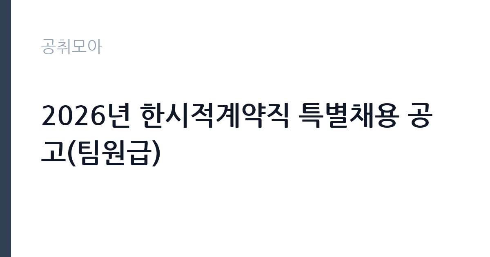

[공공기관] 2026년 한시적계약직 특별채용 공고(팀원급)
대한석탄공사 · 강원 · 마감 2026-11-17 (D-14) · 출처 나라일터

한눈에 보는 모집 조건
| 기관 | 대한석탄공사 |
|---|---|
| 공고명 | 2026년 한시적계약직 특별채용 공고(팀원급) |
| 고용형태 | 기간제 |
| 근무지 | 강원 |
| 게시일 | 2026-11-03 |
| 마감일 | 2026-11-17 (D-14) |
지원자격, 이렇게 읽으세요
- 팀원급 4명
- 접수 ~2026-11-17 마감
- 세부 조건은 원문 공고문 확인
기간제 근로자는 근로계약 기간이 정해진 신분입니다. 계약 기간과 갱신 가능 여부가 근로계약서에 명시되며 기간 만료 시 근로관계가 종료됩니다. 결원 보충이나 특정 사업 기간에 맞춰 채용되는 경우가 많아 업무 범위가 명확합니다. 이번 공고는 대한석탄공사가 직접 진행하는 자체 전형입니다. 팀원급은 경력과 자격을 우대 요건으로 두고, 학력·전공 제한은 두지 않는 형태로 운영됩니다. 공고문에는 우대요건이 자격증과 경력으로 적혀 있으므로, 사무 관련 자격증과 공공기관 행정 경력을 증빙으로 준비하면 유리합니다. 남자는 병역을 마쳤거나 면제되어야 하고, 공사 인사규정상 결격사유가 없어야 합니다. 한시적계약직 특별채용으로 운영되므로 계약 기간과 근무 시작일을 먼저 확인해야 합니다. 응시 자격 판단이 애매하면 접수 전에 채용 담당 부서로 문의하는 편이 안전합니다. 응시 자격 판단이 애매하다면 접수 전에 채용 담당 부서로 문의하는 편이 안전합니다. 서류 제출 후에는 소명 기회가 없습니다. 자격증은 유효 기간과 등록 상태를 확인해야 합니다. 갱신이 필요한 자격이라면 갱신 여부를 먼저 점검하십시오.
이 공고의 포인트
이 공고의 첫 번째 포인트는 고용 형태입니다. 계약 기간이 정해져 있어 근무 종료 시점이 명확합니다. 그만큼 짧은 기간에 어떤 실적을 남길지가 중요해집니다. 두 번째는 업무 범위가 명확하다는 점입니다. 사무행정(팀원급) 직무로 채용되므로 배치 이후 담당 업무가 크게 흔들리지 않습니다. 세 번째는 근무지입니다. 강원 지역 근무로 수도권 공고에 비해 지원자 분포가 넓지 않아 상대적으로 경쟁이 분산되는 경우가 있습니다. 모집 인원이 적은 만큼 지원자 한 명 한 명의 서류 완성도가 당락에 크게 작용합니다. 같은 직무로 함께 올라온 공고 7건 가운데 마감이 중간에 위치하므로 다른 공고와 일정이 겹치는지 확인하십시오. 다만 선발 인원이 4명으로 많지 않아 자격을 갖춘 지원자가 몰리면 경쟁률이 높아질 수 있습니다.
전형은 어떻게 진행되나
채용 절차는 공고문에 안내된 순서대로 진행되며, 서류 접수 마감 후에는 추가 접수나 서류 보완이 이뤄지지 않는 것이 원칙입니다. 서류심사에서는 응시자격과 제출서류의 형식 요건을 기계적으로 확인하므로, 경력 증명서의 기간과 직무 내용이 공고의 요건과 정확히 맞아야 합니다. 면접은 지원자 수에 따라 집단면접과 개별면접으로 나뉘고, 직무 관련 질문과 상황 대응 질문이 함께 나옵니다. 합격자 발표는 개별 통보 또는 홈페이지 게시로 이뤄지며 이후 임용 절차가 진행됩니다. 자격증 취득 예정자로 지원했다면 취득 증명 제출 기한을 반드시 지켜야 합니다.
원문에서 확인한 전형 방식
○ 모집분야 : 사무행정(팀원급) ○ 선발직급 : 계약직 ○ 고용형태 : 기간제 ○ 우대요건 : 자격증, 경력 ○ 접수기간 : 2026년11월3일 ~ 2026년11월17일 ○ 응시방법 : 온라인 지원페이지를 통한 접수(www.kocoal.or.kr) ○ 문의처 : 033-749-0653
이런 분께 추천해요
- 사무 행정 경력이나 관련 자격증이 있는 분
- 문서·예산 증빙을 꼼꼼히 처리할 수 있는 분
- 합격 후 즉시 근무가 가능한 분
지원 전 체크리스트
- 응시자격 요건과 경력 기준을 충족하는가 — 경력은 증명서로 입증해야 합니다
- 계약 기간과 근무 시작일·종료일을 확인했는가
- 제출서류 목록을 모두 준비했는가 — 누락 시 서류 단계에서 탈락합니다
- 접수 마감 2026-11-17 이전에 접수 방식을 확인해 제출했는가
모집 일정과 제출 타이밍
공고 게시일은 2026-11-03, 접수 마감은 2026-11-17입니다. 준비 기간은 약 14일로 서류 준비와 자격 증빙을 함께 처리하기에는 넉넉하지 않은 편입니다. 첫 이틀 안에 공고문과 첨부 서식을 내려받아 요건을 확인하고 남은 기간에 증빙 서류를 발급받는 일정이 현실적입니다. 면접은 서류 합격자 발표 후 짧은 간격으로 진행되는 경우가 많으므로 서류 제출과 동시에 면접 준비를 시작하는 편이 안전합니다. 마감일에는 접수 시스템이 몰리므로 하루 전까지 제출을 마치는 것이 좋습니다. 제출 서류는 공고문에 적힌 순서대로 정리하면 담당자가 확인하기 쉬워 누락이 줄어듭니다.
직무 이해하기: 공공기관
대한석탄공사 팀원급 사무행정 직무는 본사 부서에 배치되어 행정 실무를 처리하는 일입니다. 문서 작성과 접수·발송, 예산 집행 보조, 계약 관련 서류 정리, 회의 운영 지원이 중심입니다. 폐광지역 지원 사업과 관련된 신청 접수와 대상자 확인 업무를 맡는 경우도 있습니다. 사내 시스템에 자료를 입력하고 증빙을 정리해 정산에 넘기는 과정이 반복됩니다. 부서 일정에 따라 마감이 몰리면 초과근무가 발생합니다. 업무 매뉴얼과 지침이 문서로 정리되어 있어 절차를 익히면 반복 업무는 빠르게 손에 붙습니다.
자기소개서 작성 팁
지원서는 사무 행정 경험을 업무 단위로 정리하는 것이 효과적입니다. 담당했던 문서 종류와 처리 건수, 예산 규모, 정산 과정에서 오류를 잡아낸 경험을 구체적으로 쓰십시오. 자격증과 경력은 우대 요건과 직결되므로 취득 시점과 실무 기간을 분명히 밝히십시오. 계약 기간이 정해진 자리이므로 그 기간에 맡을 수 있는 업무 범위를 제시하면 좋습니다. 구성은 지원 동기, 직무 경험, 기여 방안 순서가 무난합니다. 지원 동기는 대한석탄공사의 사업 중 본인이 관심을 가진 부분을 한 가지로 좁혀 서술하고 추상적인 표현은 줄이십시오. 직무 경험은 담당했던 업무와 규모, 결과를 수치로 제시하면 설득력이 올라갑니다. 기여 방안은 입사 후 첫 3개월과 1년 계획으로 나눠 쓰면 준비도가 드러납니다.
면접 준비 포인트
면접에서는 사무 실무의 정확성과 처리 속도를 봅니다. 여러 부서의 요청이 동시에 들어올 때 우선순위를 어떻게 정하는지, 예산 증빙이 맞지 않을 때 어떻게 확인하는지 묻습니다. 문서 작성 경험과 사용 가능한 프로그램을 구체적으로 답하십시오. 폐광지역 지원 사업이라는 공사의 기능을 이해하고 있는지도 확인 질문으로 나올 수 있습니다. 마지막 질문 시간에는 근무 조건에 대한 확인 사항을 한 가지 정도 준비해 가면 성실성이 드러납니다. 면접 당일 신분증과 제출서류 원본을 요구하는 경우가 있으니 공고문의 준비물 목록을 확인하십시오.
급여·근무조건 읽는 법
한시적계약직 보수는 공사의 계약직 임금 기준과 직급에 따라 정해지며, 원문 공고에는 고용형태가 기간제로 표시되어 있습니다. 계약 기간이 정해져 있으므로 월 보수와 근무 개월 수를 곱한 총액으로 비교해야 합니다. 2026년 적용 최저임금은 시급 10,320원, 월 환산 2,156,880원이 최소 기준입니다. 구체적인 금액과 수당 항목은 공고문 처우 부분에서 확인하십시오. 2026년 적용 최저임금은 시급 10,320원, 월 환산 2,156,880원(주 40시간·209시간 기준)입니다. 고용노동부 고시 제2025-47호로 확정된 금액입니다. 공고문에 금액이 제시되지 않은 항목은 원문 보수표나 처우 설명에서 확인해야 하며 확인되지 않은 수치는 쓰지 않는 것이 원칙입니다. 비교할 때는 월 급여뿐 아니라 상여·명절휴가비·복지포인트·초과근무수당까지 포함한 연간 총액으로 계산하십시오. 기간제라면 계약 기간 동안의 총액을, 무기계약이라면 호봉 상승과 정년까지의 누적 소득을 기준으로 판단하는 편이 정확합니다.
자주 묻는 질문
- 선발 인원은 몇 명인가요?
공고문 기준 4명입니다. 직종별로 인원이 나뉘는 경우가 있으니 모집분야 항목을 함께 확인하십시오. - 근무지는 어디인가요?
강원 지역의 대한석탄공사 소속 근무지입니다. 세부 주소와 출퇴근 조건은 원문 공고문에서 확인할 수 있습니다. - 보수는 얼마인가요?
채용 신분(기간제)과 기관 임금 규정에 따라 정해지며 구체적인 금액은 공고문 처우 항목에 제시됩니다. 금액이 공개되지 않은 경우에는 원문의 보수표를 확인하십시오.
함께 보면 좋은 공고
[공공기관] 한전KDN(주) 경남사업처 배전자동화 성능관리분야 비정규직 모집공고 — 마감 2026-11-18[공공기관] 한국폴리텍대학 남대구캠퍼스 업무직(대학운영직_조리사) 채용(2차) 공고 — 마감 2026-11-11[공공기관] 한국폴리텍대학 남대구캠퍼스 행정지원직원(휴직대체_학사지원직) 채용 공고 — 마감 2026-11-11출처: 나라일터 공개정보를 바탕으로 공취모아가 정리한 안내글입니다. 모집 조건·일정은 변경될 수 있으니 지원 전 반드시 원문 공고문을 확인하세요. 본 글은 정보 제공용이며 합격을 보장하지 않습니다.